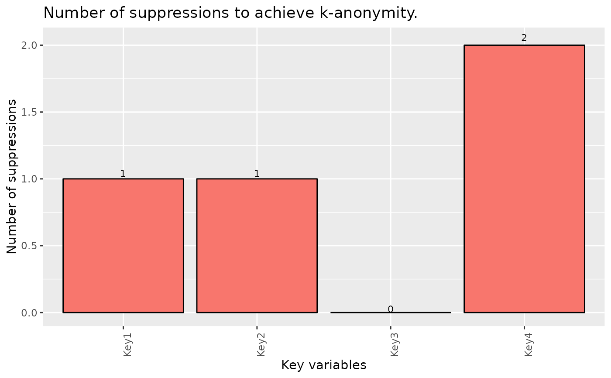
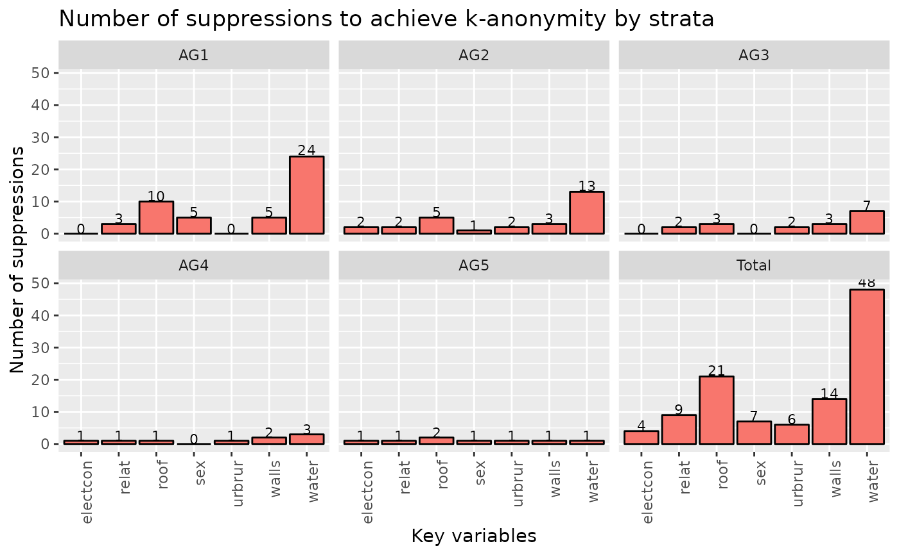
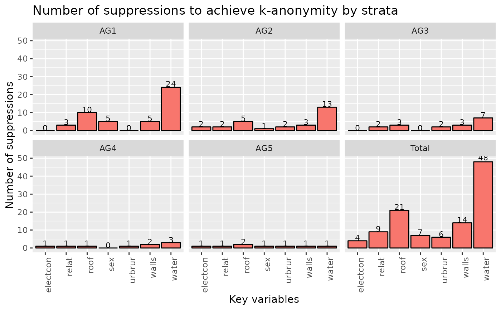

Barplot for objects from class localSuppression.
Usage
# S3 method for localSuppression
plot(x, ...)Arguments
- x
object of class ‘localSuppression’
- ...
Additional arguments, currently available are:
showDetails logical, if set, a plot of suppressions by strata is shown (if possible)
Examples
## example from Capobianchi, Polettini and Lucarelli:
data(francdat)
l1 <- localSuppression(francdat, keyVars=c(2,4,5,6))
l1
#>
#> -----------------------
#> Total number of suppressions in the key variables: 4 (new: 4)
#>
#> Number of suppressions by key variables:
#> (in parenthesis, the total number suppressions is shown)
#>
#> Key1 Key2 Key3 Key4
#> 1 1 (1) 1 (1) 0 (0) 2 (2)
#>
#> 2-anonymity == TRUE
#> -----------------------
plot(l1)

## with details of suppression by strata
data(testdata2)
testdata2$ageG <- cut(testdata2$age, 5, labels=paste0("AG",1:5))
keyVars <- c("urbrur","roof","walls","water","electcon","relat","sex")
strataVars <- c("ageG")
inp <- testdata2[,c(keyVars, strataVars)]
ls <- localSuppression(inp, keyVars=1:7, strataVars=8)
print(ls)
#>
#> -----------------------
#> Total number of suppressions in the key variables: 109 (new: 109)
#>
#> Number of suppressions by key variables and strata:
#> (in parenthesis, the total number suppressions is shown)
#>
#> urbrur roof walls water electcon relat sex
#> AG5 1 (1) 2 (2) 1 (1) 1 (1) 1 (1) 1 (1) 1 (1)
#> AG3 2 (2) 3 (3) 3 (3) 7 (7) 0 (0) 2 (2) 0 (0)
#> AG1 0 (0) 10 (10) 5 (5) 24 (24) 0 (0) 3 (3) 5 (5)
#> AG2 2 (2) 5 (5) 3 (3) 13 (13) 2 (2) 2 (2) 1 (1)
#> AG4 1 (1) 1 (1) 2 (2) 3 (3) 1 (1) 1 (1) 0 (0)
#> Total 6 (6) 21 (21) 14 (14) 48 (48) 4 (4) 9 (9) 7 (7)
#>
#> 2-anonymity == TRUE in all strata!
#> -----------------------
plot(ls)
 plot(ls, showDetails=TRUE)

plot(ls, showDetails=TRUE)
